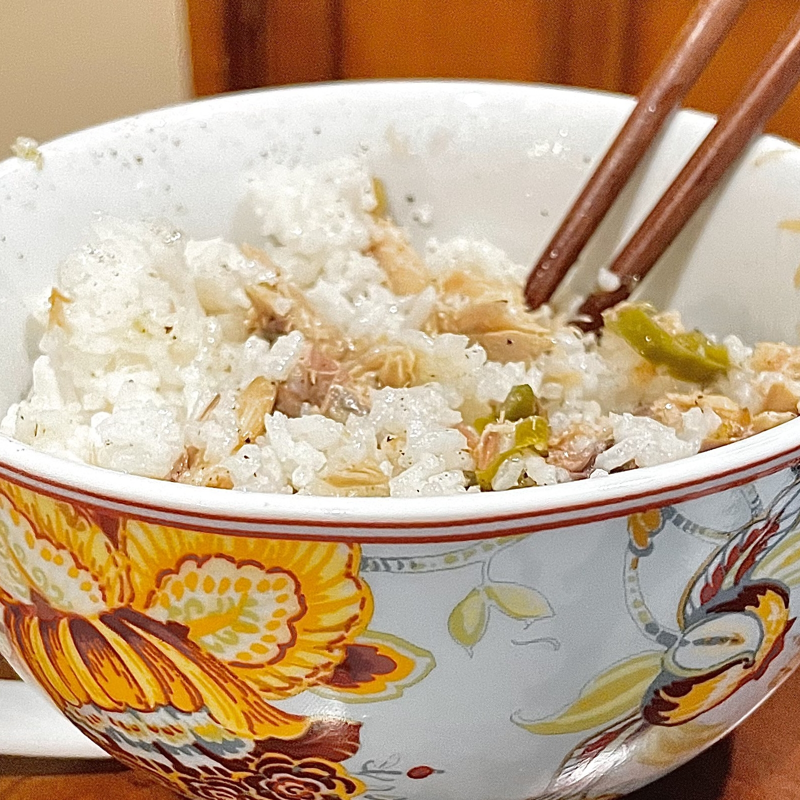

Fish on Rice
The idea of this recipe is that getting ✨ fancy ✨ canned fish
is healthier, tastier, and faster to make than ordering McDonalds. If
your bar is that low then this is the recipe for you!
Choose good canned fish
King Oscar Wild Caught Sardines in Extra Virgin Olive Oil
from amazon
King Oscar Skinless & Boneless Mackerel, Jalapeno
from amazon
Make rice in rice cooker
Put fish on top